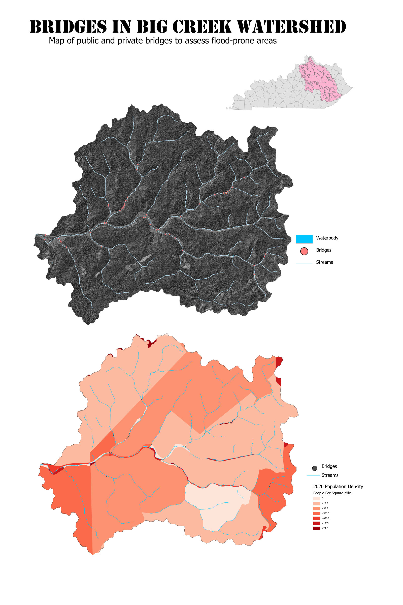
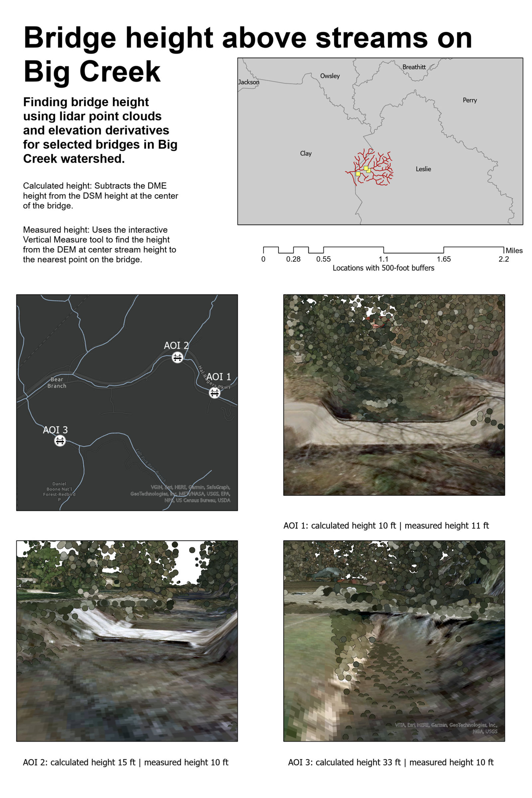
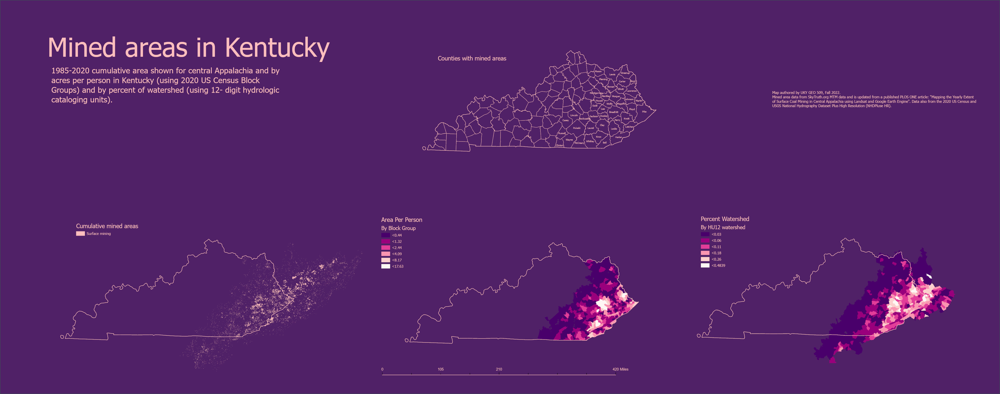

Bridges in Big Creek watershed
An analysis of flood-prone infrastructure and conditions in an Eastern Kentucky watershed.
A summary of goals, methodology, and results in full report
01: Community

High resolution version
02: Infrastructure

High resolution version
03: Inundation
04: Terrain

High resolution version